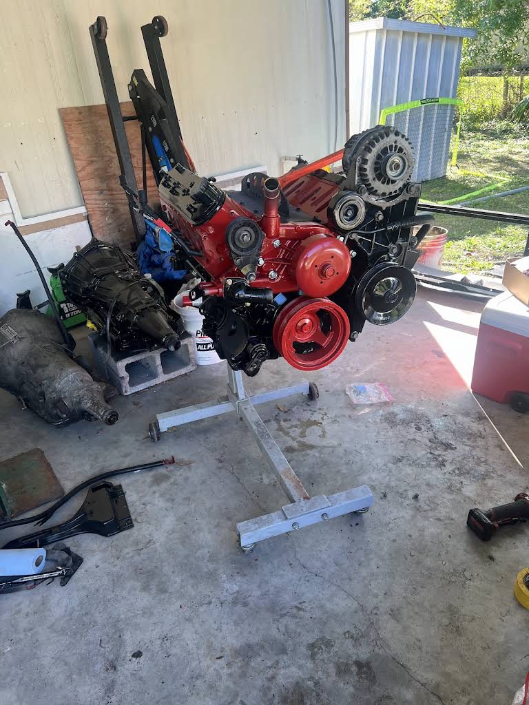

What To Watch For
When This Decision Comes Up
What Puts You Here
- Spun rod bearing — deep knock that gets louder with load
- Thrown rod, or a hole punched through the side of the block
- Overheated badly and now the head is warped or cracked
- Hydrolocked after standing water — bent rods are common
- Ran out of oil, or lost pressure and kept driving
- Timing belt or chain failure on an interference engine
- High-mileage engine burning oil faster than you can add it
Why It Matters
This is a big decision. A rebuild depends on whether the existing engine can be repaired within specification. A replacement depends on finding a suitable unit and understanding its condition and coverage. Inspection comes first; any teardown needed to answer the remaining questions is discussed before it begins.

The Process
How The Work Gets Done
The Honest Trade-Offs
- Confirm the failure. Review the symptoms, repair history and initial test results before planning internal work.
- Agree on inspection and teardown. Discuss what needs to come apart and what that work can tell us before you authorize it.
- Measure what can be reused. Check the relevant components against specifications and identify machining or replacement needs.
- Compare available options. Review a rebuild, used replacement or remanufactured unit where suitable, including availability and the quoted scope.
- Look at the whole vehicle. Consider the transmission, cooling system and other known repairs alongside the engine decision.
- Approve the plan. Confirm the chosen work, estimate and applicable coverage before the major repair proceeds.
What You Can Expect
- Available repair options and their scope explained before approval
- Inspection and measurements appropriate to the failure
- The vehicle’s other repair needs included in the conversation
- Direct communication with the shop about the job
- By-appointment scheduling keeps larger jobs organized
Worth Knowing
What Matters Most
Next Step
Talk to the shop
FAQ
Common Questions
Which costs less, rebuilding or replacing?
It depends on the damage, parts, machining and available replacement units. The inspection helps establish which options are practical. Ask us to explain the scope of each estimate so you can compare what is included.
Does the engine always need to come apart first?
No. Initial testing and visible damage may answer some questions. When an internal inspection is needed, we discuss the teardown scope before it starts. A rebuild decision may need measurements that cannot be taken with the engine assembled.
How long will my car be down?
Timing depends on the inspection, parts availability, machining and the chosen repair. Ask us for the current scheduling outlook. The appointment and expected work are confirmed directly.
What warranty comes with an engine?
Coverage depends on the work and the supplier or unit selected. Ask for the applicable terms, exclusions and labor coverage in writing before approving the job.
Is major engine work worth it on a high-mileage car?
The engine is one part of that decision. The transmission, cooling system, suspension, body condition and your plans for the vehicle all matter. Bring up other known problems so they can be considered with the engine estimate.